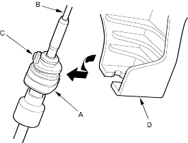
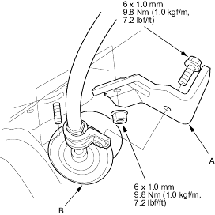

- Raise the vehicle and make sure it is securely supported, refer to the '01 Civic Shop Manual on this CD (see page 1-15).
- Remove the ash tray, then remove the center console lower cover.
- Remove the shift lever console panel.
- Shift the shift lever to
 position.
position. - Slide the lock tab (A) down on the shift cable end holder (B).

- Rotate the shift cable lock (C) holding its middle (D) with needle-nose pliers (E) from the shift cable end and shift cable holder.
NOTE: Do not pry the shift cable lock with a screwdriver, it may damage the shift cable end holder.
- Rotate the socket holder (A) on this shift cable (B) counterclockwise a quarter turn; the projection (C) on the socket holder faces direction to remove. Then slide the holder to remove the shift cable fron the shift cable base (D).

- Remove the shift cable guide bracket (A) and grommet (B), then remove the guide bracket from the cable.
